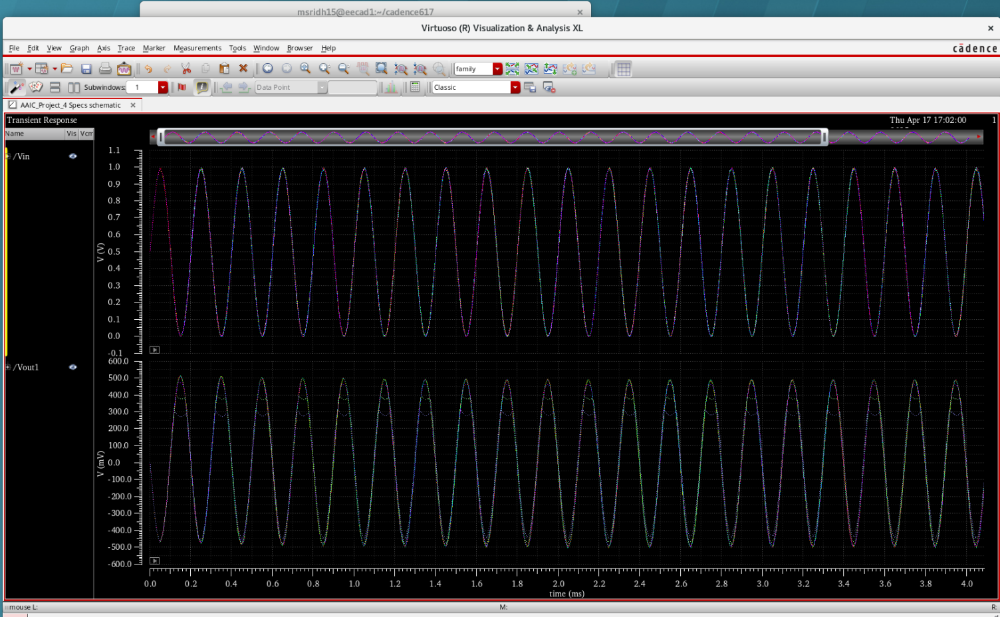
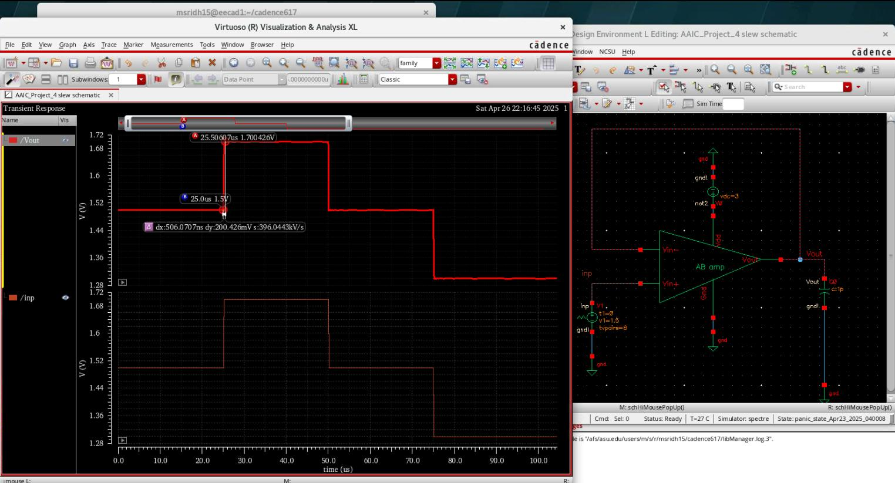

1. Project Overview
This project focuses on the transistor-level design and simulation of a single-ended NMOS input folded cascode amplifier integrated with a Class-AB output buffer. The objective was to achieve high open-loop gain, adequate stability, low distortion, and low noise while operating under strict power constraints.
The complete design was implemented and verified using Cadence Virtuoso and Spectre, with extensive validation through transient, AC, distortion, noise, PSRR, and CMRR simulations.
2. Amplifier Architecture

The amplifier employs an NMOS input folded cascode topology to achieve high intrinsic gain while maintaining a wide input common-mode range. A Class-AB output buffer is used to improve large-signal drive capability without significantly increasing quiescent power consumption.
3. Design Specifications
- Supply Voltage (VDD): 3 V
- Total Bias Current: ~666 µA
- Quiescent Power: ~2 mW
- Input Common-Mode Range: 1.5 V – 2.5 V
4. Tools & Design Environment
- Cadence Virtuoso: Schematic capture and device sizing
- Cadence ADE: Simulation setup and sweeps
- Spectre: Accurate transistor-level simulations
- ViVA: Waveform, FFT, and frequency-domain analysis
5. Transient Performance

Transient simulations were performed with the amplifier configured as an inverting amplifier with 0 dB closed-loop gain. The results confirm stable operation and a peak-to-peak output swing of approximately 1 V.
6. Input Common-Mode Sweep
The input common-mode voltage was swept from 1.5 V to 2.5 V in 200 mV steps while monitoring the transient output response. Proper biasing and linear operation were maintained across the entire specified range.
7. Distortion Analysis

Harmonic distortion was evaluated using a 5 kHz sinusoidal input at mid-supply common-mode voltage. The third-order harmonic distortion (HD3) was extracted from the output spectrum.
Measured HD3 ≈ 50.6 dB
8. Slew Rate Measurement
Slew rate was measured by configuring the amplifier as a unity-gain follower driving a 1 pF capacitive load. A piecewise linear (vpwl) input was applied to extract the large-signal response.
Slew Rate ≈ 10 V/µs
9. AC Gain & Stability

- DC Gain: ~98 dB
- Unity Gain Frequency: > 10 MHz
- Phase Margin: ~61°
- Gain Margin: ~26 dB
10. PSRR & CMRR
- PSRR @ 10 kHz: > 70 dB
- CMRR @ 10 kHz: > 70 dB
11. Noise Performance

Noise simulations were performed to evaluate the input-referred thermal noise of the amplifier under nominal bias conditions.
Input-referred noise ≤ 15 nV/√Hz
12. Design & Matching Considerations
Although physical layout was not part of this project, careful attention was paid to device matching and symmetry at the schematic level to ensure robust and repeatable circuit behavior.
- Matched NMOS input transistors
- Consistent folded cascode device sizing
- Matched current mirrors in bias circuitry
- Symmetric signal paths
13. Conclusion
This project demonstrates a low-power, high-gain analog amplifier design achieving strong stability, low distortion, and low noise across the specified operating range. The folded cascode topology combined with a Class-AB output buffer provides an effective trade-off between performance and power efficiency.